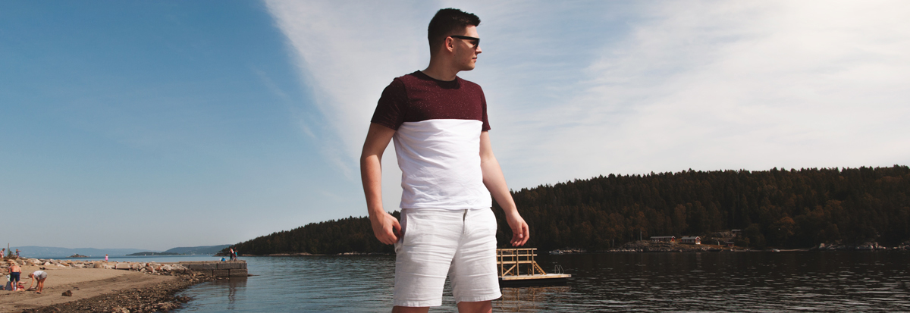

What can I tell you about me?
My name is Olaf Szmidt. I'm a photographer by night, engineer by day. I take pride in what I do best, which is taking pictures of people.
I was born in Lublin, Poland and grew up in various parts of the UK. Currently I am based in London, United Kingdom.
My goal is to convey emotion via photographs. If you think I can be of any use to you, please contact me through the contact form.

Wedding Photography
I provide wedding services starting from simple planning photographs and ending on all year long coverage post wedding.

Portraits Photography
I love photographing people and I tend to get my clients very comfortable in front of the camera. You won't be camera shy, contact me!

Event Photography
If you're interested in capturing any kind of event, I can be the person you need.